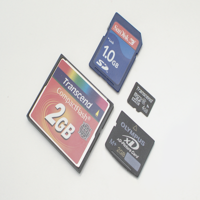
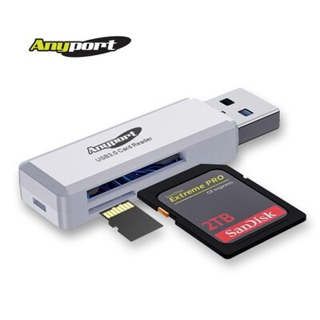
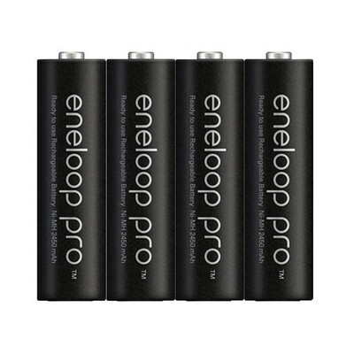
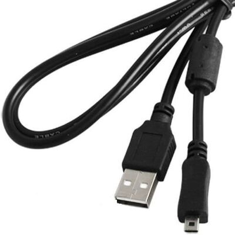
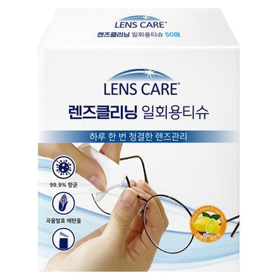
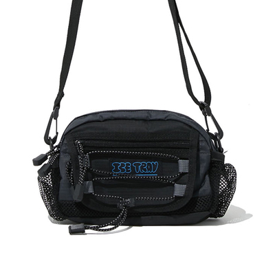

빈티지 카메라 소개빈티지 디카 기종소개 빈티지 디카를 사용하기 위한 준비물 빈티지 카메라로 찍은 사진들 사진찍으러 가기 좋은 가을 단풍 명소

빈티지 디카들은 sd카드, xd카드, 메모리스틱 등 기종마다 다양한 저장장치를 사용하기 때문에 꼭 기종에 맞는 저장장치를 잘 알아보고 구매해야합니다.

사진을 찍었으면 노트북이나 핸드폰으로 옮기기 위해 꼭 필요한 멀티 리더기 입니다. 카메라 기종이 여러대라면 각각 사용하는 저장장치가 다를 수 있으니 멀티 리더기를 추천합니다.

빈티지 디카들은 건전지가 아닌 충전지로 사용하도록 설계되었습니다. 그래서 건전지 보다는 충전지를 사용하는 것을 권장합니다. 또한 충전지를 충전하기 위한 충전기도 함께 구매하여 주세요.

충전지를 사용하지 않는 빈티지 디카들도 있습니다. 이경우 보통 충전기를 사용하는 제품들인데 기종에 맞는 충전기를 구매하여야 합니다.

좋은 사진들을 찍으려면 렌즈를 항상 깨끗하게 유지해야겠죠! 렌즈 클리너로 렌즈를 닦아 사진을 찍었을 때 이물질이 보이지 않도록 하세요.

빈티지 디카들은 만들어진지 10년도 더 된 기종들이 대부분입니다. 연식도 오래되고 내구성도 그리 좋지 못하므로 카메라를 안전하게 보관해줄 수 있는 카메라 가방이 필요합니다.